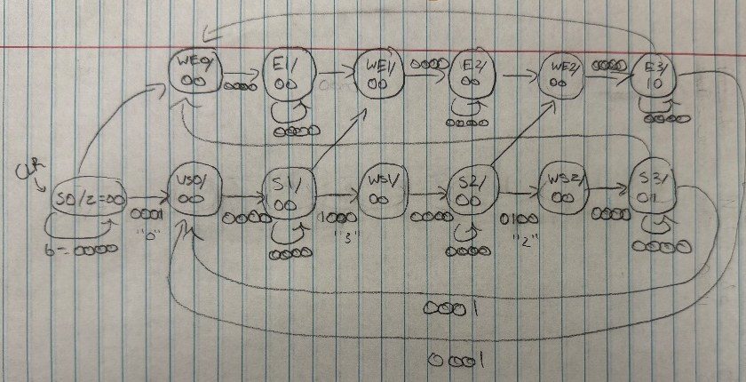
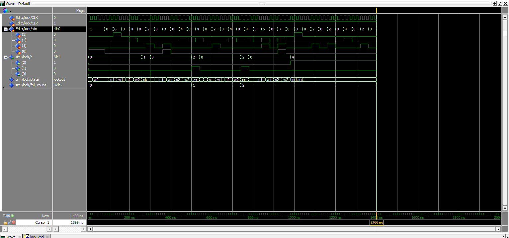

FPGA Digital Lock with 3-Strike Lockout
A push-button combination lock built as a finite state machine in VHDL, verified in Questa Sim, and implemented on a Digilent Basys 3 board with Xilinx Vivado.
- Date
- April 2026
- Language
- VHDL
- Tools
- Questa Sim, Vivado
- Hardware
- Basys 3 (Artix-7)
Overview
The lock reads a three-digit code (0-3-2) from four push buttons and drives three
LEDs: one for unlocked, one for wrong code, and one for
locked out. After three wrong codes in a row, the lock ignores every button
until it is cleared with a reset switch.
Design
State machine
Each digit uses two states: one that waits for a press (s0, s1, s2)
and one that waits for release (w0, w1, w2). Waiting for release
means holding a button down counts as one press, not one press per clock cycle.
All three digits are stored in registers and checked together after the last button is released. The lock never shows which digit was wrong, so a user can't guess the code one digit at a time.

| State | Output z | Meaning |
|---|---|---|
s0 … w2 | 000 | Entering digits |
s3 | 001 | Unlocked, fail counter reset |
err | 010 | Wrong code (1st or 2nd) |
lockout | 100 | Third wrong code, held until CLR |
Code check and fail counter
When the third button is released, the FSM compares the stored digits to the secret code. A separate counter goes up only on the clock edge where the machine enters the error state, so a wrong code counts once no matter how long it stays there.
when w2 =>
if btn = "0000" then
if (d0 = "0001" and d1 = "1000" and d2 = "0100") then
next_state <= s3; -- correct: unlock
elsif fail_count = 2 then
next_state <= lockout; -- third wrong sequence
else
next_state <= err; -- wrong sequence 1 or 2
end if;
end if;Debouncing
Mechanical buttons bounce for a few milliseconds when pressed. The debouncer divides the 100 MHz board clock with an 18-bit counter (to about 381 Hz), samples the buttons into a 3-stage shift register, and only passes a button through when all three samples are high.
Verification
I tested the lock in Questa Sim before putting it on hardware. The waveform below runs one correct entry and then three wrong ones:
- The correct code
0-3-2reachess3and lights the unlock output (z = 001). - Each of the next two wrong codes enters
err(z = 010) and raisesfail_countto 1, then 2. - The third wrong code goes to
lockout(z = 100), and later button presses have no effect.

btn, output z, current state and fail_count.Hardware
I synthesized the design in Vivado with an XDC constraints file mapping the ports to the Basys 3, then programmed the Artix-7 over JTAG.
| Signal | Pin | Board part |
|---|---|---|
clock | W5 | 100 MHz oscillator |
b[0] (digit 0) | T18 | BTNU |
b[1] (digit 1) | W19 | BTNL |
b[2] (digit 2) | U18 | BTNC |
b[3] (digit 3) | T17 | BTNR |
z[0] unlocked | U16 | LD0 |
z[1] wrong code | V14 | LD7 |
z[2] lockout | V13 | LD8 |
clr (active low) | V17 | SW0 |
Source code
- lock.vhd: lock FSM with lockout
- debounce.vhd: clock divider and button debouncer
- top_lock.vhd: top level connecting the two
- basys3.xdc: Basys 3 pin constraints
What I learned
- Drawing the state diagram first made the VHDL a direct translation, with fewer bugs to chase in simulation.
- Separate "wait for release" states are the simplest way to turn a held button into one event.
- Counting on a state transition instead of on a state avoids counting the same event on every clock cycle.
- A design that passes simulation can still fail on hardware without debouncing.